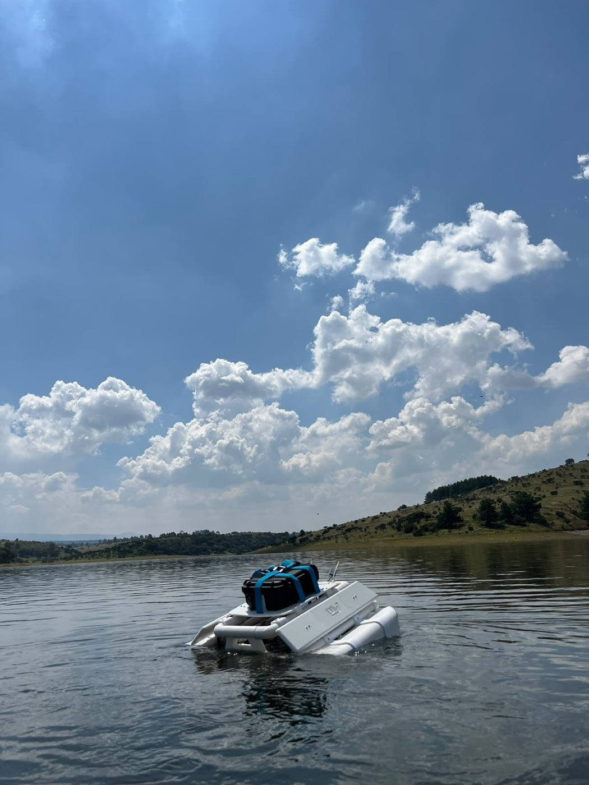
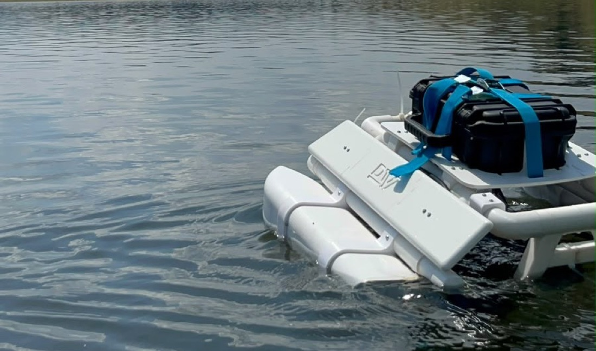
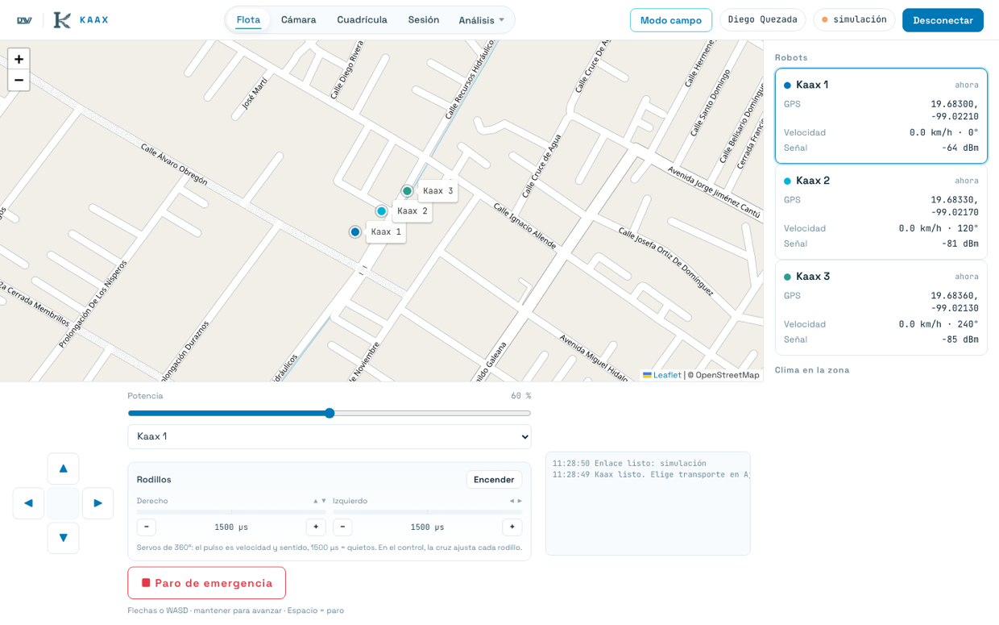
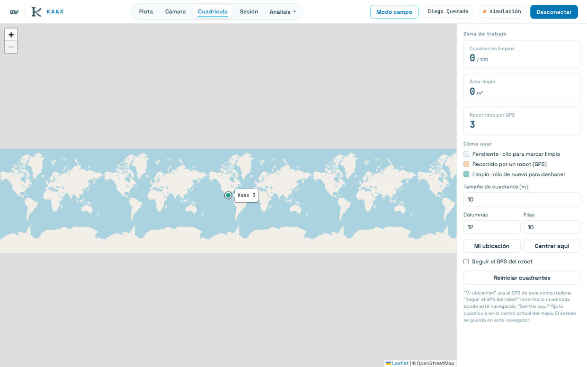
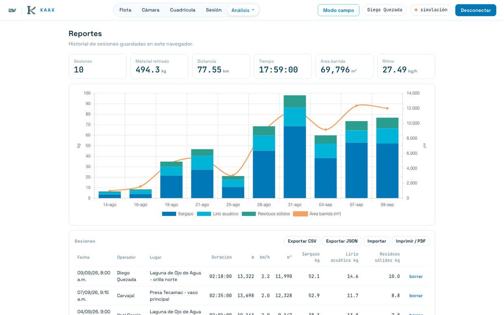

DQ
Diego Quezada Ramírez
Líder técnico
Hardware, firmware y el sistema de control de la flota.
Una flota de robots acuáticos que recolecta lirio, sargazo y residuos de presas, lagos y costas, para sumarse a los programas de saneamiento que ya existen.
SEMARNAT y La Jornada (2026) · CONABIO vía Mongabay (2022) · PlanRemar, UAM–SEMARNAT–ONU (2022)
de las mediciones de sulfuro de hidrógeno en recolectores de sargazo superó el límite mexicano de exposición para jornadas de ocho horas. Comezón, dolores de cabeza, dermatitis y fatiga.
Rodríguez et al. (2026), Harmful Algae 154. UNAM · Universidad de São Paulo. 35 trabajadores monitoreados con sensores, Quintana Roo, 2025.
Estudiantes del Tecnológico de Monterrey, PrepaTec Campus Estado de México, construyendo Kaax para el Tech4Good y el Torneo Mexicano de Robótica.
Hardware, firmware y el sistema de control de la flota.
Diseño mecánico y desarrollo del proyecto.
Investigación y desarrollo del proyecto.
Desarrollar tecnología robótica accesible que recolecte vegetación invasora y desechos de presas, lagos, ríos y costas, reduciendo la carga del trabajo manual que hoy se hace a mano y bajo el sol, exponiendo a los trabajadores a riesgos a su salud.
Kaax se diseña para sumarse a programas federales ya financiados, como el saneamiento de presas de CONAGUA, en lugar de competir con ellos.
Flotas de robots Kaax desplegadas a escala nacional, manteniendo limpios los cuerpos de agua de México de forma autónoma, continua y a una fracción del costo actual.
Devolver ecosistemas sanos a las comunidades que dependen de ellos, y dejar la plataforma abierta para otros usos acuáticos: rescate, monitoreo y contención de derrames.
Un catamarán autónomo con GPS, propulsión dual y rodillos que empujan el material hacia adentro. A bordo lleva una Raspberry Pi 5 que crea su propia red WiFi, así que funciona sin señal en el agua.
Pruebas del prototipo en presa, Estado de México.


Sobre los 4 kg: es la capacidad de carga del robot, no lo que recoge en una jornada. Kaax no transporta el material a bordo: lo arrastra hacia la orilla con los rodillos y la red, así que lo recolectado no está limitado por ese peso. Los 4 kg son lo que puede llevar encima — electrónica, baterías e instrumentos— sin perder estabilidad ni flotación.
Si el robot deja de recibir órdenes por más de 1.5 segundos, los motores y los rodillos se detienen solos. Un rodillo girando sin enlace no se para por sí mismo, y esa es justo la situación que el sistema tiene que cubrir.
Hoy Kaax se teleopera: un operador lo conduce desde la estación de control y el robot registra su recorrido por GPS. El modo autónomo está planeado y sigue en desarrollo — la detección de sargazo por color y las rutas predictivas ya están diseñadas, pero todavía no operan solas en el agua.
Cuando llegue, será autonomía acotada y siempre bajo supervisión humana. Ante la duda, no captar: un falso positivo tiene consecuencia física sobre fauna viva.
Cada jornada registra distancia recorrida por GPS, velocidad media, área barrida y cuadrantes limpiados. El peso recolectado se captura a mano al pesar la carga, porque inventarlo haría inútil el resto.
Kaax no se maneja con un control remoto: se maneja desde una interfaz que además mide. Corre en el navegador, se instala como aplicación y funciona sin internet, porque en el agua no hay señal.



La aplicación y el mapa se guardan en el dispositivo antes de salir. En el agua todo se registra, y al volver a la red se sincroniza solo.
Distancia por GPS, velocidad, área barrida y cuadrantes limpiados salen de la propia jornada. El peso se captura al pesar la carga.
Cada operador entra con su cuenta y las jornadas quedan asociadas a él, así el historial de un cuerpo de agua es de todo el equipo.
Qué cuesta construir un Kaax y de dónde sale el dinero.
Robot, mecanismo de captación, estación de control y capacitación.
Soporte, refacciones de desgaste y plataforma de datos.
El costo por unidad cae a menos de la mitad al pasar de una pieza a una serie de cincuenta.
Punto de equilibrio anual estimado en 50 unidades. Cifras en pesos mexicanos.
Presupuesto de limpieza de un solo municipio en 2026. El mercado no hay que crearlo: ya existe y ya se gasta.
Heraldo de México Quintana Roo (2026)
Costo de jornaleros en Tulum durante nueve meses de temporada, haciendo a mano el trabajo que Kaax automatiza.
Municipios y gobiernos estatales · CONAGUA y SEMARNAT · cooperativas pesqueras · operadores turísticos de la Riviera Maya, Pátzcuaro y Valle de Bravo.